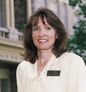

By
Pamela Wray Eckhardt (79),
President
of Ricks College Alumni Council
Pamela was named to the Alumni Council in 1996. She began serving as
president of the council earlier this year and is a member of the Summit
magazine advisory board.
Pam operates a sewing business out of her
home in Blackfoot, Idaho, while raising her three children with her
husband, Gary (79). She was a member of Vikadettes and served on the
Student Development Council while at Ricks. She is a graduate of BYU in
clothing and textiles.
Dear
Alumni,
As we all look toward a new millennium, we in
the Alumni Council reflect back on our shared experience at Ricks and what
it means to us today. The more than 125,000 Ricks College Alumni who make
up this association have now spread throughout the world to other
institutions of higher learning and employment, as well as opportunities
for community service and the rearing of their families.
We all know that college is a place to
develop academically and socially; but at Ricks, students also grow
spiritually. We hope you remember the multi-faceted foundation you
received at Ricks College and how it affects you even now. At graduation
in 1978, then Ricks College president Bruce C. Hafen said,
"May we never forget those tender moments of spiritual power and
insight that tell us why we have such a college in the church and what we
learn when we come here. We
are accountable to God, I believe, to remember those moments of learning."
The experiences and opportunities you had at Ricks College did not
just come by chance. They happened, in part, because of the sacrifice of
thousands of Church members who make it financially possible for the
Church Board of Education to maintain and perpetuate this special place
building by building, program by program, and student by student.
We thank you for maintaining the standards
and mission of The Church of Jesus Christ of Latter-day Saints. We thank
you for sending your sons and daughters to Ricks College and for telling
other youth how great it can be to begin their higher education there. We
thank you for your generous contributions. You are continuing the
tradition of that Spirit of Ricks in your own families and communities.
The Alumni Association really is here for
you. No matter where life has taken you, we can help strengthen your ties
back to Ricks through the following services:
Summit magazine is sent out twice a year as a free service to all alumni.
(There are 25,000 alumni however, who do not receive this because we do not
have a current address.)
Inside Ricks is an informal newsletter sent via e-mail each week. If you
do not currently receive it, let us know by contacting us at insidericks@ricks.edu
and we will begin sending it to you.
Area activities such as firesides, traveling performances, and CES
programs take place across the country and cater to alumni and potential
students.
Reunions sponsored by the Alumni Office maintain (and renew) relationships
and help keep the Ricks experience unforgettable.
Alumni travel is a way to tour the world with Ricks College. See page 17
of this issue for information on the upcoming alumni tour to Israel.
Current alumni addresses and pertinent information is stored in our
computer files. You can help update records on-line, via e-mail or by
calling the Alumni Office.
The Ricks Web Page enables you to visit campus and get the latest news and
issues on-line. The web-page also features links to each of the services
mentioned above. Go to www.ricks.edu.
Alumni representatives in various areas of the United States are involved
when a Ricks College function is in their area. They are a resource to the
college, to you, and to new as well as future Ricks College students. If
you live near one of these representatives (listed in the sidebar of the
contents page), please call and volunteer your services . Or if you have
interest in serving Ricks College, please contact the Alumni Office.
Together we can all
rekindle the "Spirit of Ricks"
and help spread it throughout the communities in which you live and
serve.
Happy
Ties,
Pamela
Wray Eckhardt (79)
Alumni Council President